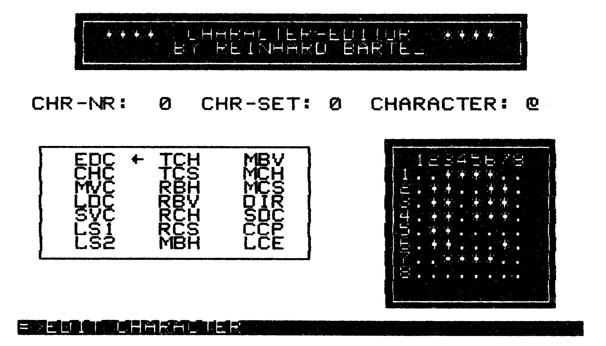

Character-Editor
Mit diesem Programm können Sie einfach und schnell Ihren eigenen, ganz persönlichen Zeichensatz erstellen. Als Bonbon enthätt das Programm eine Routine, mit der sich Zeichensätze auf Diskette generieren lassen, die wie ganz normale Basic-Programme geladen und gestartet werden.
Character-Editor (Listing 1) ist ein Programm, mit dem sich leicht eigene Zeichensätze erstellen lassen. Nach dem Laden mit »LOAD"Name",8« wird das Programm durch den Befehl »RUN« gestartet. Anschließend stehen dem Benutzer die beiden originalen Zeichensätze des C 64 zur Bearbeitung zur Verfügung. Character-Editor verfügt über 21 Routinen, die das Erstellen eines neuen Zeichensatzes in sehr komfortabler Weise unterstützen. Die Routinen sind in einer Menü-Tafel innerhalb des Arbeitsbereichs durch die Cursor-Tasten frei anwählbar. Über verschiedene Tasten sind weitere Erstellhilfen gegeben. Character-Editor ist sehr übersichtlich gehalten. Das heißt, es wird immer das gerade zu bearbeitende Zeichen, dessen Code, die entsprechende 8x8-Matrix und der aktuelle Zeichensatz angezeigt. Das Hin- und Herspringen zwischen verschiedenen Menüs entfällt. Alle Ein- und Ausgaben werden in einer speziellen Zeile im unteren Teil des Bildschirms verarbeitet. Die Steuerung innerhalb der Routinen wurde ebenfalls auf die Cursor-Tasten gelegt, so daß Character-Editor mit wenigen Tasten schnell und einfach zu bedienen ist. Weiterhin verfügt Character-Editor über einen Test-Modus, in dem der Zeichensatz in der oberen Bildschirmhälfte eingeblendet ist und nun die komplette Tastaturbelegung ausprobiert werden kann. Die bearbeiteten Zeichensätze können auf Diskette gespeichert werden. Der fertig bearbeitete Zeichensatz läßt sich aber auch als eigenständiges Programm mit Basic-Start speichern. Er kann somit ganz einfach mit LOAD"Zeichensatzname",8 eingelesen und mit RUN gestartet werden.
Alles in allem wird dem C 64-Benutzer ein sehr leistungsfähiges Toolkit zur Verfügung gestellt, mit dem ein den individuellen Bedürfnissen und Wünschen angepaßter Zeichensatz erstellt werden kann.
Diese Funktionen sind in jeder Bearbeitungsroutine frei wählbar.
Anwahl der Bearbeitungsroutinen
Die Abkürzungen der Bearbeitungsroutinen befinden sich in einer kleinen Menü-Tafel innerhalb des Bildschirms. Mit den Cursor-Tasten kann ein Pfeil» — « gesteuert werden, der immer auf die momentan angewählte Routine zeigt. Gleichzeitig wird der volle Text der angewählten Routine in einer speziellen Zeile im unteren Teil des Bildschirms angezeigt (Bild 1). Mit der »RETURN«-Taste gelangt man in die angewählte Routine. Der Pfeil verschwindet, und die Abkürzung der angewählten Routine wird revers dargestellt.

Erklärung der einzelnen Bearbeitungsroutinen
| EDC (Edit Character) | Editieren eines Zeichens. Es erscheint der Cursor (nicht blinkend) innerhalb der Bildschirmmatrix des aktuellen Zeichens. Mit den Cursor-Tasten kann nun jedes Bit des Zeichens angewählt werden und mit der »S«-Taste gesetzt beziehungsweise zurückgesetzt werden. |
| CHC (Change Characters) | Vertauschen zweier Zeichen. Mit den Cursor-Tasten kann nun das erste zu vertauschende Zeichen angewählt werden. Ist dies abgeschlossen, so ist die Aufforderung »SELECT 1. CHARACTER« mit der »RETURN«-Taste zu quittieren. Ebenso ist mit der Anwahl des zweiten Zeichens zu verfahren. Ist die Aufforderung »SELECT 2. CHARACTER« mit der »RETURN«-Taste quittiert worden, so erscheint die Sicherheitsfrage »ARE YOU SHURE (Y/N)?«. Wird diese mit »Y« quittiert, werden die beiden ausgewählten Zeichen vertauscht. Es lassen sich Zeichen aus dem ersten mit Zeichen aus dem zweiten Zeichensatz vertauschen, wenn mit »F1« der Zeichensatz umgeschaltet wird. |
| MVC (Move Character) | Verschieben (kopieren) eines Zeichens. Auswahl des zu verschiebenden Zeichens. Wie ein Zeichen sich verschieben läßt, wurde bereits bei der Routine CHC beschrieben. |
| LDC (Load Character-Set) | Laden eines zuvor mit der SVC-Routine gespeicherten Zeichensatzes. Der Name des zu ladenden Zeichensatzes wird in der untersten Bildschirmzeile eingegeben. |
| SVC (Save Character-Set) | Speichern der beiden in Bearbeitung stehenden Zeichensätze. Eingabe des Namens wie bei der LDC-Routine. |
| LS1 (Load Set 1) | Laden des ersten C 64-Zeichensatzes. Wird die Sicherheitsfrage mit »Y« quittiert, wird der erste der beiden orginalen Zeichensätze als aktueller Zeichensatz übernommen. Der in Bearbeitung stehende Zeichensatz geht dabei verloren. |
| LS2 (Load Set 2) | Laden des zweiten C 64-Zeichensatzes. Wie LS1-Routine, nur wird der zweite Zeichensatz des C 64 geladen. |
| TCH (Turn Character) | Drehen eines Zeichens. Mit den Cursor-Tasten kann das aktuelle Zeichen rechts und links herum gedreht werden. |
| TCS (Turn Character-Set) | Drehen sämtlicher Zeichen des in Bearbeitung stehenden Zeichensatzes (mit Hilfe der Cursor-Tasten). |
| RBH (Rotate Byte horizontal) | Horizontales Rotieren eines Bytes innerhalb eines Zeichens. Mit den Cursor-Tasten UP und DOWN wird ein Pfeil-Cursor »–« innerhalb der Bildschirmmatrix gesteuert, der das zu rotierende Byte anwählt. Mit den Cursor-Tasten RIGHT und LEFT wird das angewählte Byte entsprechend rotiert. |
| RBV (Rotate Byte vertikal) | Vertikales Rotieren eines Bytes innerhalb eines Zeichens. Mit den Cursor-Tasten RIGHT und LEFT wird ein Pfeil-Cursor »|« innerhalb der Bildschirmmatrix gesteuert, der das zu rotierende Byte anwählt. Mit den Cursor-Tasten UP und DOWN wird das angewählte Byte entsprechend rotiert. |
| RCH (Rotate Character) | Rotieren eines Zeichens. Mit den Cursor-Tasten kann das aktuelle Zeichen in jede Richtung byteweise rotiert werden. |
| RCS (Rotate Character-Set) | Rotieren sämtlicher Zeichen des in Bearbeitung stehenden Zeichensatzes (mit Hilfe der Cursor-Tasten). |
| MBH (Mirror Byte horizontal) | Horizontales Spiegeln eines Bytes innerhalb eines Zeichens. Die Steuerung erfolgt wie bei der RBH-Routine. |
| MBV (Mirror Byte vertikal) | Vertikales Spiegeln eines Bytes innerhalb eines Zeichens. Die Steuerung erfolgt wie bei der RBV-Routine. |
| MCH (Mirror Character) | Spiegeln eines Zeichens. Mit den Cursor-Tasten kann das aktuelle Zeichen horizontal und vertikal gespiegelt werden. |
| MCS (Mirror Character-Set) | Spiegeln sämtlicher Zeichen des in Bearbeitung stehenden Zeichensatzes (mit Hilfe der Cursor-Tasten). |
| DIR (Directory) | Einlesen und Anzeigen der Directory der eingelegten Diskette. |
| SDC (Send Disk Command) | Senden von Diskettenbefehlen. In der Eingabe-Zeile im unteren Teil des Bildschirms kann jeder Befehl an die Floppy gesendet werden (zum Beispiel Scratch, Validate, New etc.). Nach beendeter Diskettenoperation wird der Status der Floppy angezeigt. |
| CCP (Create Character Programm) | Erzeugen eines Zeichensatz-Programmes. Diese Routine generiert ein Programm mit Basic-Start. Der momentan bearbeitete Zeichensatz wird zusammen mit einer Aktivierungsroutine auf Diskette gespeichert. Die Eingabe des Namens erfolgt in der untersten Bildschirmzeile. Vor dem Namen wird automatisch »P/« als Kennung für Characterprogramm gesetzt. |
| LCE (Leave Editor) | Verlassen des Character-Editors. Nach quittieren der Sicherheitsabfrage mit »Y« sind Sie wieder im Direkt-Modus des C 64. Soll der zuletzt bearbeitete Zeichensatz weiter editiert werden, so ist der Character-Editor mit ?USR(0) zu starten. Ansonsten kann mit RUN ganz neu begonnen werden. |
Mit »RETURN« können die Routinen verlassen werden. Der Pfeil-Cursor »*-« erscheint dann wieder. Die reverse Darstellung der angewählten Routine wird wieder aufgehoben.
Allgemeine Hinweise
- Der Character-Editor ist vollkommen in Maschinensprache geschrieben und liegt bei $0801 bis $1BD2 (Basic-Start).
- Es wird immer nur ein Zeichensatz editiert (256 Zeichen). Es kann aber zwischen den Zeichensätzen frei umgeschaltet werden.
- Wird der Character-Code 255 um 1 erhöht, so wird er zu Character-Code 0. Wird der Character-Code 0 um 1 erniedrigt, so wird er zu Character-Code 255.
- Die beiden in Bearbeitung stehenden Zeichensätze liegen bei $3000 bis $3FFE
- Ist der momentan bearbeitete Zeichensatz nicht aktiviert, wird dies durch die Meldung »ZEICHENSATZ NICHT AKTIVIERT« im oberen Teil des Bildschirms angezeigt.
- Sind Eingaben erforderlich, so erscheint in der letzten Bildschirmzeile »= >« und ein blauer Stern als Cursor. Diese Eingabezeile nimmt maximal 35 Zeichen auf. Steuertasten (außer DEL) und Grafikzeichen werden nicht bearbeitet. Eine leere Eingabe bewirkt einen Sprung zurück in den Menü-Modus.
- Fehler bei Zugriffen auf das Floppy-Laufwerk werden abgefangen und angezeigt. Es wird überprüft ob das Floppy-Laufwerk mit der Laufwerksnummer 8 für Zugriffe zur Verfügung steht. Ist dies nicht der Fall, wird die Aufforderung »PLEASE SWITCH DRIVE #8 ONÜ!« ausgegeben. Nach Betätigen einer Taste wird wiederum überprüft, ob das Floppy-Laufwerk für Zugriffe zur Verfügung steht. Wenn ja, wird der Diskettenzugriff mit Ausgabe der Meldung »DISKOPERATION IN PROCESS. PLEASE WAIT« durchgeführt (außer DIR-Routine). Nach Beendigung des Diskettenzugriffs wird der Fehlerkanal ausgelesen und angezeigt.
- Würde beim Einlesen und Anzeigen des Directories der Bildschirm nach oben gescrollt, wird der Einlesevorgang unterbrochen und erst nach Quittieren der Aufforderung »PRESS RETURN TO CONTINUE« mit der »RETURN«-Taste fortgesetzt.
- Wer die geänderten Zeichensätze auf EPROM brennen will, kann den mit der SVC-Routine gespeicherten Zeichensatz laden und dann auf EPROM brennen.
- Wenn man in Maschinensprache programmiert und eigene Zeichen verwenden will, so kann man die vom Character-Editor mit der SVC-Routine abgespeicherten Zeichensätze laden und mit der Befehlsfolge LDA #$lC, STA $D018 einschalten und mit der Befehlsfolge LDA #$15, STA $D018 ausschalten. Man muß nur darauf achten, daß der Bereich $3000 bis $3FFF nicht verwendet wird.
Wichtige Hinweise
Wird das mit der CCP-Routine erzeugte Programm gelaen und gestartet, müssen Sie auf folgendes achten.
- Sie verfügen nur über einen Zeichensatz!!!
- Bei Reset kann der Zeichensatz mit SYS 51200 erneut aktiviert werden.
- Das Basic-RAM liegt bei $033C bis $9FFF (828 bis 40959). 40131 BYTES FREE
- Der Kassetten-Puffer liegt bei $C851 bis $C910 (51281 bis 51472)
- Der Bildschirm liegt bei $CC00 bis $CFF7 (52224 bis 53239)
- Die Sprite-Pointer liegen bei $CFF8 bis $CFFF (53240 bis 53247)
- Der Zeichensatz liegt bei $C000 bis $C7FF (49152 bis 51199)
- Die Aktivierungsroutine liegt bei $C800 bis $C850 (51200 bis 51280)
- RAM-TOP $C000 bis $CFFF ist für Maschinensprachroutinen nicht mehr verwendbar.
- Vor dem Laden von Maschinenprogrammen mit normalem Basic-Start muß der Basic-Start durch POKE 43,l:POKE 44,8 auf $0801 (2049) gesetzt werden.
- Wird eine Basic-Erweiterung zusammen mit dem Character-Programm benutzt, muß zuerst die Erweiterung aktiviert werden und dann der Zeichensatz mit SYS 51200. Die benutzte Erweiterung darf den Bereich $C000 bis $CFFF (49152 bis 53247) nicht benutzen.